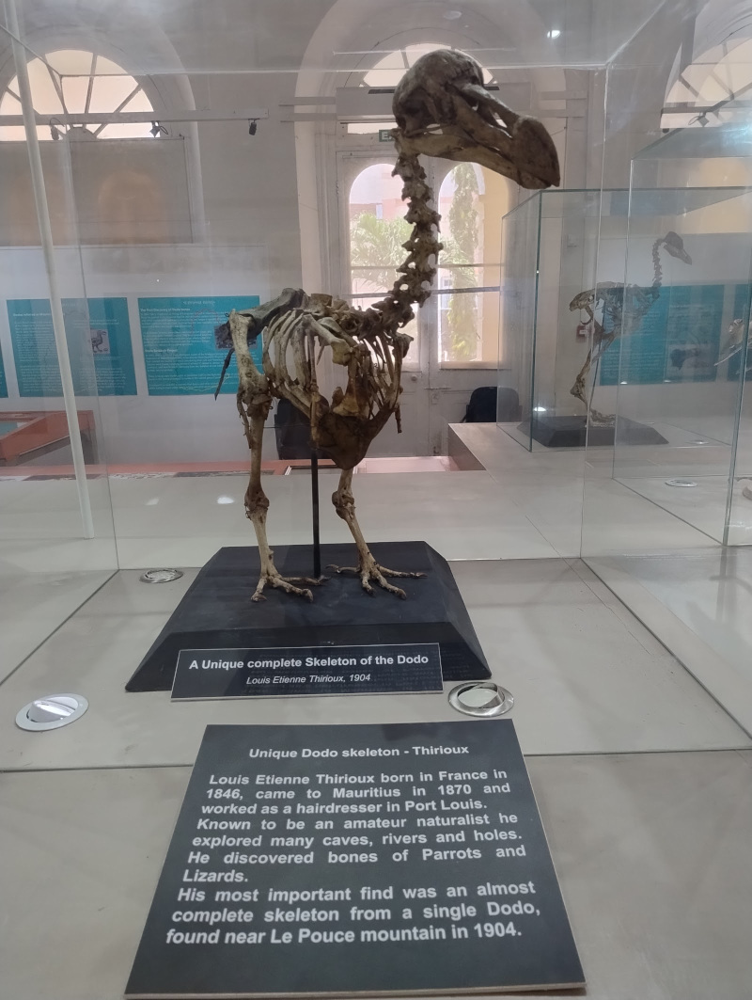
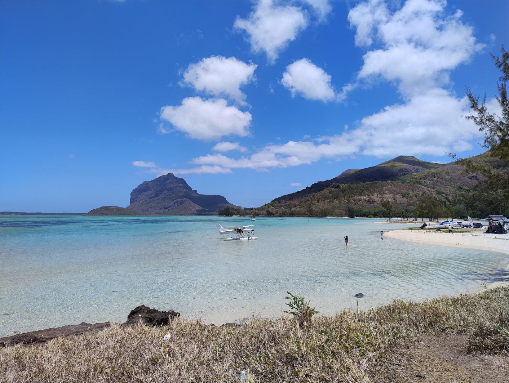
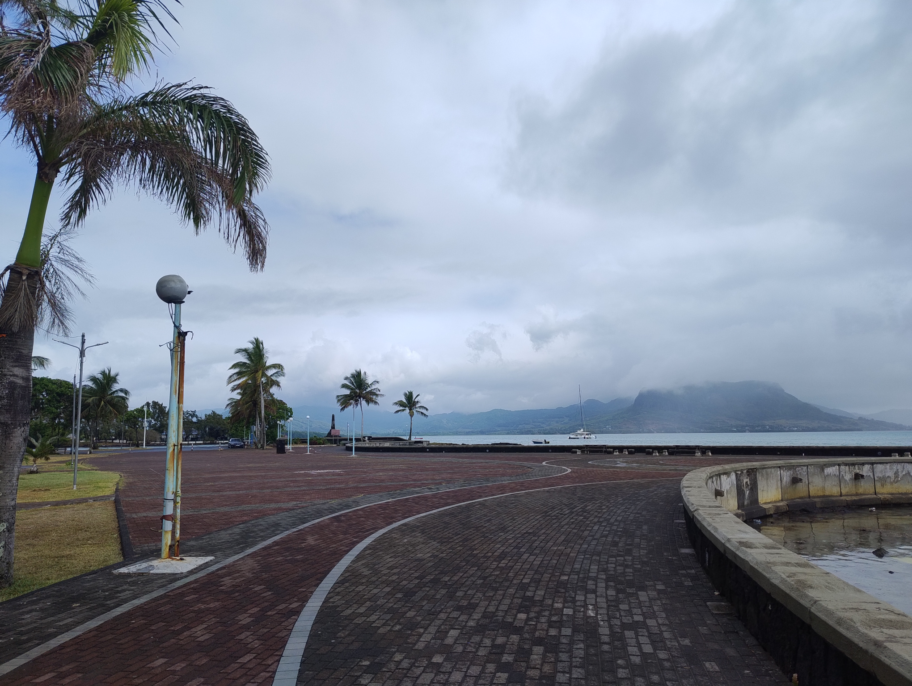

South Korea 2025
Where ancient palaces stand in the shadow of gleaming skyscrapers, and bustling cityscapes give way to breathtaking mountain vistas, all in a heartbeat.
South Korea boasts a captivating blend of ancient heritage and contemporary innovation, offering a wealth of cultural experiences from impressive museums showcasing its rich history to a dazzling array of things to see and do. It's a place where the traditional and the cutting-edge coexist in a truly compelling way.
Impressions
It's been a while since I've done a city break type holiday like this. There were plenty of things to do, but it was incredibly exhausing. The cities I visited had so much to do and it felt like scratching the surface.
It was hard at the age I'm at trying to see as much as possible.
Eating
Food was okay, but I found a lot of it was highly sugared.
Good value for money as a basic sit-down meal could be as little as £5, but normally less than £20.
Street food was fairly abundant in certain areas, but a lot of this was junk food or small snack things. You could get things like Kimbap, fried fish cake, hot dogs, and skewered meats.
Vegetarian food is possible, but not super easy to find. I dropped the diet and sometimes had meat while I was there. If you're really fussy, it will probably be hard to explain what you want unless you can speak good Korean.
Ordering is easy as you often find places where they have an electronic menu in the style they have at McDonald's, so you just select what you want and pay for it. You can also point and ask for things as they have picture menus for a lot of items. Don't expect it to be in English though. I had to guess a lot of the time, but I can handle changing my diet a bit.
Supermarkets like 7-Eleven are everywhere, so you can get food from these convenience stores. I often bought kimbap or sandwiches from these places as I often wanted to get food "to go".
A lot of the food seems to be junk food, so a lot of the time what I was eating wasn't healthy. I'm sure it's possible to eat healthily, but it would probably require looking around a lot more.
Transport
On arrival, buy a local data SIM card and T-Money card.
The SIM card was useful for getting around, finding out bus times, how to use transport, etc.
I used this app which was useful for navigating. It tells you when the buses are going to arrive and the route they take. So if I was going to a specific location, I would use this app to track where the bus was going.
The T-Money card can be used on the metro systems and buses for all of the cities in South Korea, so it was incredibly useful. You just need to add credit to it, which can be done at metro stations or 7-Eleven.
For long-distance journeys, I used KTX trains, which were fast and efficient. I booked online in advance before I went from Korail.
When you book the tickets, it says that you have to print them and take them with you. That's what I did, but when I sat at the designated seat, no one checked the ticket.
Transport was easy. For KTX, you have a specific station for them, and there is a board with the trains. It tells you the number and when they are due. You can board them 15 minutes before and just walk to the platform when it says so on the board.
Metro stations were fairly easy to navigate. It tells you where the trains are going, and you just need to check an online map to track it.
Accommodation
I booked in advance using booking.com.
Accomodation in Seoul seemed a lot more expensive than other places. I stayed in hostels in the Myongdong area in Seoul.
For Busan and Gyeongju the rooms seemed to be a lot cheaper and surprisingly good value for money.
Telecoms
I brought an Entel SIM card before I went. You can buy the tourist package online for about £12. I recommend it as it came in very handy.
Locations
Mont Choisy

Mont Choisy beach is beautiful, but the water was very still.
I stayed in a neighbourhood which was a 10-minute walk away. This was in-between Mont Choisy beach and Trou Aux Biches. Both excellent beaches.
Grand Baie was near to Mont Choisy. You could walk there, but it took 1.5 hours. There were buses, but they weren't running because of the public holiday. I had to get a taxi which I shared with this French couple, it was 100 rupees each.
Port Louis
Port Louis is the capital city.
I visited Port Louis by using the public buses to get there. I didn't need to change and the journey was about 1 hour. It stops at a central bus station and then you can get the bus back from the same place. It might not make much sense though, but it is easy to do once you know.
Port Louis was better than I expected. The bit where the bus stops looks quite run down, but the city itself has some nice things.
There is a nice church, the central market is interesting, and the highlight for me was the natural history museum where you could see some Dodo skeletons. There is a modern area near the docks which has a modern shopping mall and some restaurants. Not really my thing, but it was pleasant.
Flic En Flac

Flic en Flac was the busiest place I stayed at. It has a long sandy beach and a lot of tourist attractions. This was my favourite beach because there were more waves and I like the stimulation of being in the water when it is like that.
The apartment was really nice and had a supermarket nearby. I brought all my food from there and made my own meals.
I didn't really go anywhere else when I stayed there, apart from the shopping mall nearby. I took a bus to get there and back, but you could walk from where I stayed in about one hour.
Le Morne
Le Morne is a geological feature, like a mountain, but I think it would more likely be classified as a hill. You can climb to the top, but I didn't do this because I probably would have had an accident.
I stayed on the outskirts of a village called La Gaulette. It was a little bit more rural there. I really enjoyed staying in the apartment because of the nature. From the terrace, I had a view of the sea. There were all kinds of coloured birds and I saw a parakeet once. There were huge bats swooping down. I couldn't believe it. When I looked it up, I found out that they are called the Mauritian Flying Fox and are one of the biggest in the world.
I took the number 5 bus from the main road where I was staying and this would get me to a place called La Prairie which had beautiful scenery of Le Morne. Further down there was a place called Bay du Cap which was an interesting village. I went there on a different day on the same bus.
The main beach at Le Morne is nice, but you can only realistically get there by own transport or taxi. I managed to hail a taxi by walking up the road to where the junction was, it cost 200 and 300 to get back. Probably a rip-off, but a lot less than what they are advertising online.
The beach was nice, but had a lot of high-end hotels.
La Gaulette had a shopping mall with a large supermarket. There are cafes and restaurants around so it isn't really isolated.
Blue Bay

Blue Bay was a really nice place. It's very small, but has a lot of character. The beach is very small, but really nice water.
The weather was bad because there was a cyclone which passed nearby to Mauritius. The first day was really humid with some showers. I went to Mahebourg which is a town nearby. It was surprisingly nice, with nice scenery around the seafront. I found it interesting walking around the streets through some of the neighborhoods.
There was a museum there on the different European influences in Mauritius which was interesting.
Blue Bay itself, is mainly set up for tourists, it has a few restaurants and a couple of small shops. The nearest supermarket is in Mahebourg.
The last day it rained heavily all day and it was impossible to do anything. I had snorkeling booked, but this didn't run because of the weather. I felt depressed because I was really looking forward to it. I might never get to experience that now, unless I am able to go back.
Today is the last morning before I fly home. The sunrise was beautiful this morning. I am sitting in a cafe and my taxi arrives in 1 hour and 10 minutes.